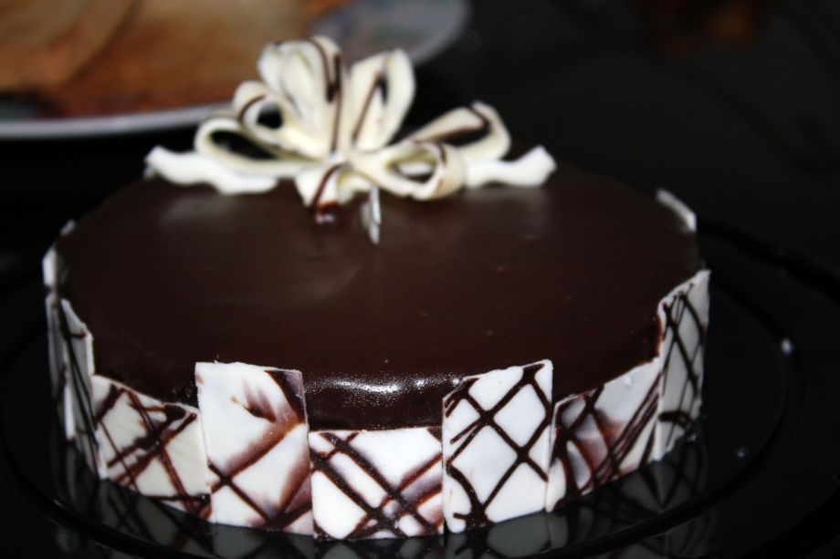
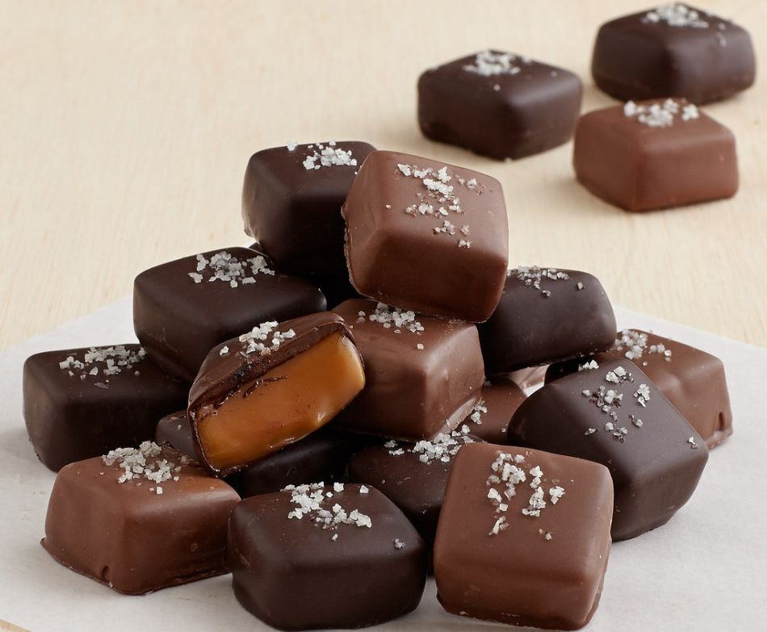
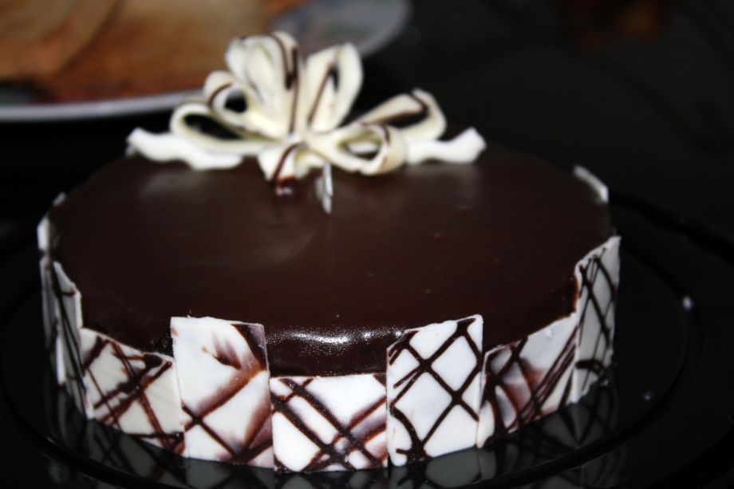
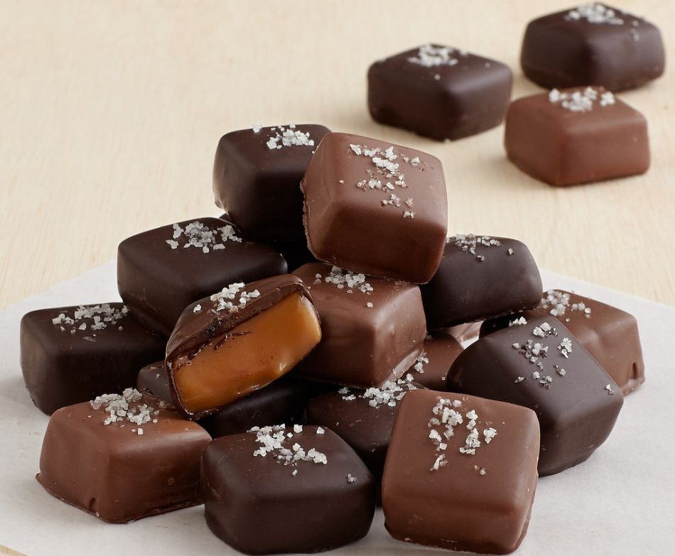

Chokladprovning
Nedan hittar du lite svar på de frågor du kanske har kring chokladprovningen, som vad det är, hur det går till och kostnaden. Vill du sedan boka en tid så går du till vårt bokningsformulär bokningsformulär.
Vill du veta mer om kakaoträdet, dess historia och vilka sorter som finns så kan du gå till sidan Kakaoträdet Kakaoträdet
Vad är chokladprovning?
Chokladprovning påminner om vinprovning. Man tittar, doftar och smakar för göra en bedömning av kvalitet, stil och ursprung.Hos oss handlar det om att lära dig mer om choklad och dess historia, olika bönor och dess kvalitet, samt smaka på olika sorters choklad med olika kakohalt.
Hur går det till?
Vi sitter tillsammans i gruppen med ett fat fyllt med 12 olika chokladbitar samt ett glas vatten. Vi berättar och säger till när det är dags att äta en bit och då vilken du ska ta. Mellan varje chokladbit sköljer vi munnen genom att dricka vatten.
Vad bör jag tänka på?
Det är bra att ha ätit en lättare måltid innan du kommer så du verkligen kan njuta och känna smaken av chokladen och inte tänka på att du är hungrig. Men du kommer att vara ganska mätt efter passet då chokladen mättar en del. Undvik att ha på dig starka dofter (parfym, after shave, lotion, shampoo odyl) då det kan försämra smakupplevelsen.
Tider och priser
hokladprovningen sker kvällstid måndag och onsdagar mellan kl. 19 och 21. Max antal på varje provning är 12 stycken personer. Pris per person är 525 kr
 


